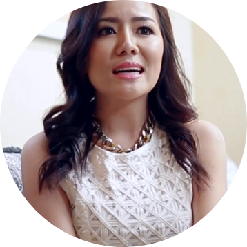

閨密情報站
閨密生活大小事
影音專區
Q & A
院所資訊
菲蜜莉雷射
閨蜜生活大小事
分享你我的生活
職業 / 有無生小孩 / 年齡
服務業，從事美容工作 。第一胎自然產第二胎剖腹產 ，一個三歲半一個兩歲。
遇到的私密問題是什麼
第二胎後開始漏尿很明顯，跑步走斑馬線時候，運動有開合跳抬腿跳彈跳動作大笑時後就會漏尿，只要一漏尿整個心情就會非常不好，平時也是會有分泌物。
治療過程的感覺舒適度
會有些微微刺刺的感覺不過是可接受的，醫師在治療過程中都非常有耐心，讓我一點都不緊張。
治療後的改善及生活品質的恢復
除了可以開始做彈跳運動也不怕突然大笑會漏尿了，老公也說緊度同時也增加了很呢。
職業 / 有無生小孩 / 年齡
美容師。沒有生小孩。35歲。
遇到的私密問題是什麼
分泌物過多，味道重。尤其如果熬夜更是。
治療過程的感覺舒適度
做了三次療程，過程中其實快速，在到一個點的時候會有比較熱的感覺，但可以忍耐這樣的熱感。
治療後的改善及生活品質的恢復
在做完第一次的療程之後就有明顯的改善！對於味道和分泌物減少很多。三次療程完，不需要天天使用護墊。而且意外的發現緊度更好。
職業 / 有無生小孩 / 年齡
美容業。無小孩。27歲。
遇到的私密問題是什麼
分泌物多，有時會有些異味。
治療過程的感覺舒適度
可以忍受，過程中醫生溫柔，會一直詢問會不會不舒服再適時調整打的能量，很推薦洪醫師。
治療後的改善及生活品質的恢復
分泌物有改善，味道比較沒有那麼重。
更多國外閨蜜分享...
Danielle Lloyd
42歲

Rose Amanda
47歲
Elisa Lunocs
49歲
Hanna Norldys
45歲
我要了解